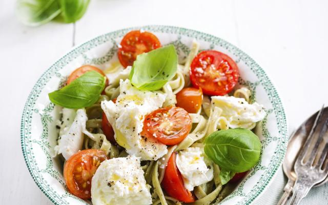

Pasta met kerstomaatjes

Ingrediënten
- 500 g spaghetti
- 6 teentjes knoflook, 2 grof gehakt en 4 fijngehakt
- 3 eetlepels olijfolie
- 500 g kerstomaatjes
- 1 rode peper, in reepjes
- 1 eetlepel honing
- 4 eetlepels verse basilicum, gehakt
- 50 g Parmezaanse kaas, geraspt
Bereiding
- Kook de spaghetti gaar in ruim kokend water met het teentje grof gehakte knoflook en een beetje zout.
- Fruit ondertussen de fijngehakte knoflook in de olie en voeg de kerstomaatjes, peper en honing toe. Laat het mengsel koken tot de tomaatjes zacht zijn.
- Schep de saus door de beetgare spaghetti en serveer het geheel met de gehakte basilicum en Parmezaanse kaas.